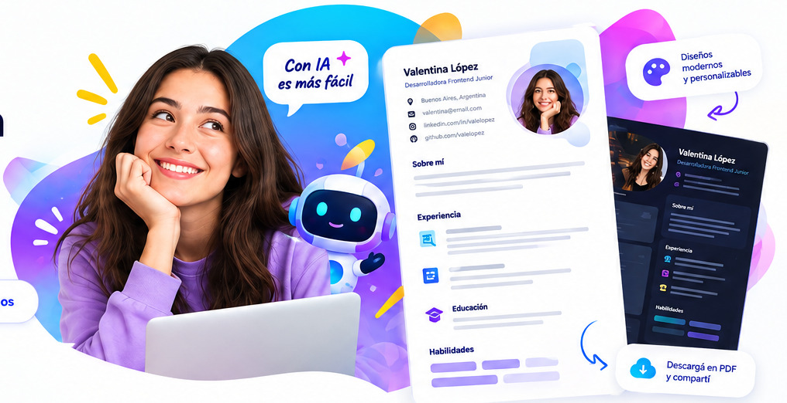

Te guiamos
paso a paso
Un asistente de IA te hace las preguntas y completa tu CV por vos.
Creá un CV profesional y personalizado con la ayuda de inteligencia artificial. Rápido, simple y pensado para vos.
* Datos de demostración: no representan estadísticas reales.

Un asistente de IA te hace las preguntas y completa tu CV por vos.
Tips y recomendaciones para destacar en el mercado laboral.
Diseños adaptados a distintos perfiles y sectores.
Obtené tu CV en PDF listo para postularte.
Elegí un diseño, nosotros te ayudamos con el contenido.
Seleccionaste: Clásica moderna. Tocá otra plantilla para explorarla.
Una experiencia simple para crear un CV que hable de vos.
No. La idea del producto es guiarte paso a paso y ayudarte a elegir una plantilla.
No, es un prototipo visual en HTML y CSS. Las funcionalidades reales se implementarán después.